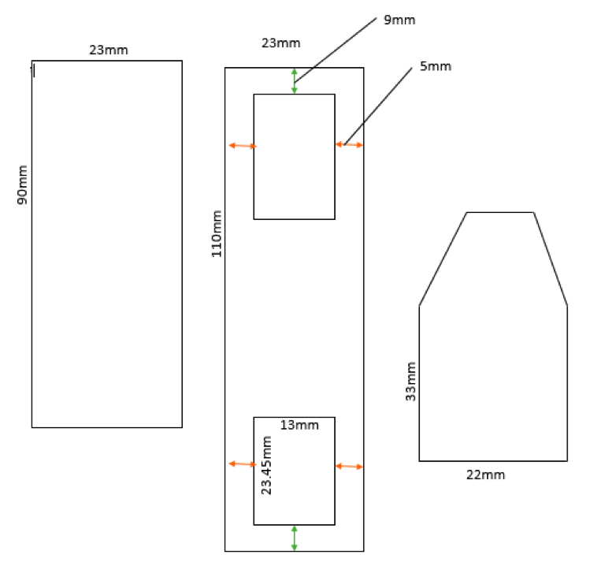

instructions
- Purchase your very own Baymax doll from here
- Cut small slits in his arms so that pieces of the following dimensions can snugly fit inside:

- Use the dimensions above to laser cut pieces for all 3 components of the arm (shoulder -> elbow -> wrist). The dxf file to use with the laser cut program has been made accessible to you and can be found in the "lasercut" folder in the github repository (link provided in Links section). Make 2 sets of the cuts - 1 for each arm.